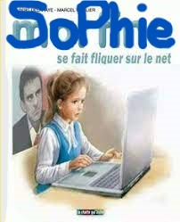

06.00.00.00.00
sophie.graff-paille@laplateforme.io
04/11/1970
Mariée
Permis B
EXPÉRIENCES PROFESSIONNELLES
Employée polyvalente, confection de packagings, vente
NOUCHIG
, Marseille (2010/2022)
Trésorière, écrivain public bénévole
L'ENCRE BLEUE
, Marseille (2011/2020)
Relectrice
Magazine
VMARSEILLE
(2010/2013)
Employée Production, vente
L'ATELIER DU CHOCOLAT
, Nantes (2008/2010)
Encadreuse
CASTORAMA
, Nantes (2004)
Fleuriste
BROLLO FLEURS
, Auterive (2002/2003)
Employée administrative, service courrier
COFINOGA GIE
, Mérignac (1993/1998)
Travaux contrôle et relecture
ALFA
, Bordeaux (1992)
Employée dessin en éditique
Imprimerie
BIDOIT & FILS
, Cognac (1990/1991)
DIPLÔMES ET FORMATION
BAC A3 (Lettres / Arts appliqués) 1989
CAP FLEURISTE 2002
Apprentissage de l'Anglais (compréhension, parlé, écrit)
Espagnol (scolaire)
CENTRES D'INTÉRÊT
Lecture
Écriture
Nature
Arts Appliqués, Streetart
exemple lyonnais